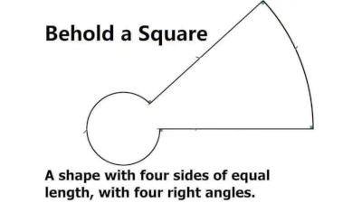

In what concerns the continuous evaluation solving exercises grade during the semester, you should submit until 23:59 of October 18th
(this exercise will still be available for submission after that deadline, but without couting towards your grade)
[to understand the context of this problem, you should read the class #02 exercise sheet]

Do you really know what is a square?Write a program that given an integer n draws an ASCII art square of n × n characters.
The square should have n lines, each with n characters. The four corners should be '+'. Besides the corners, the first and last column should have '|' and the first and line should have '-'. The inside of the square should be '.'. For instance, for n=6, the square should be:
+----+ |....| |....| |....| |....| +----+
The input as a single line containing an integer n, the size of the square.
The output should be made of n lines, each with n characters, representing the square as described on the problem section.
The following limits are guaranteed in all the test cases that will be given to your program:
| 3 ≤ n ≤ 100 | Size of the square |
| Example Input | Example Output |
5 |
+---+ |...| |...| |...| +---+ |